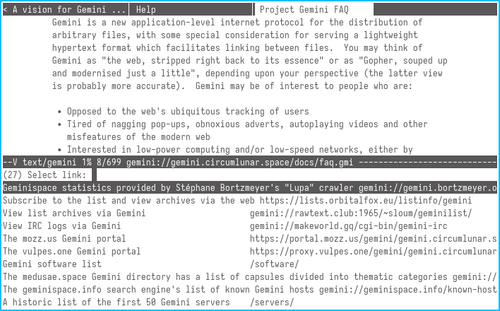
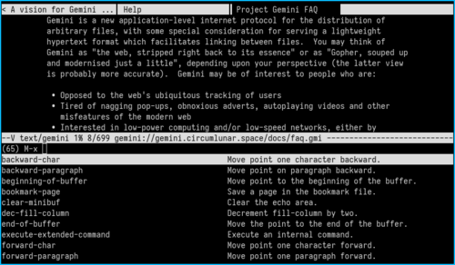
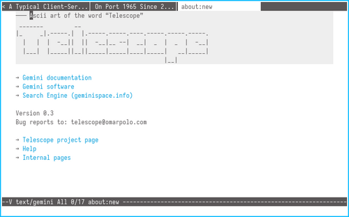
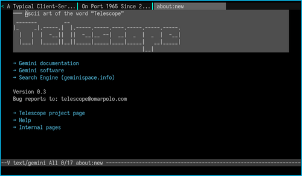
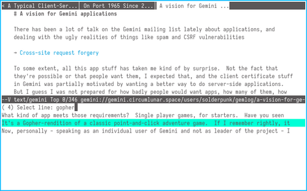
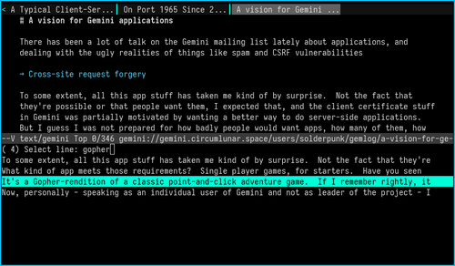
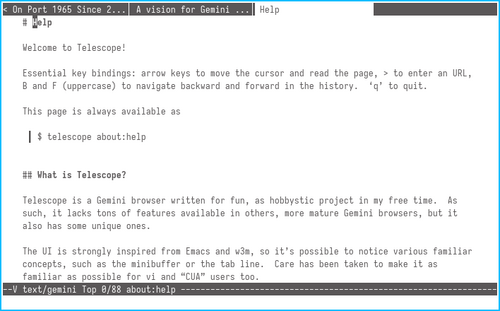
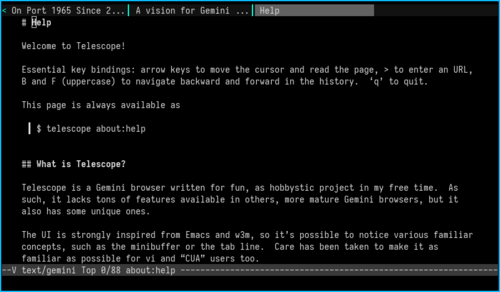
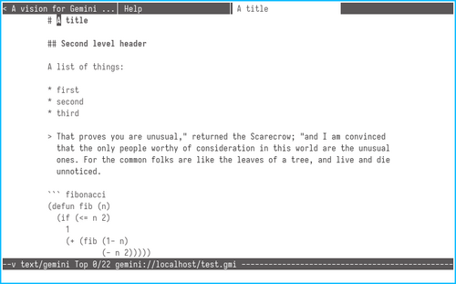

default look on bright terminal

default look on dark terminal

the contrib/light theme

the contrib/dark theme

swiper with the contrib/light theme

swiper with the contrib/dark theme

about:help with the contrib/light theme

about:help with the contrib/dark theme

Brutalist theme